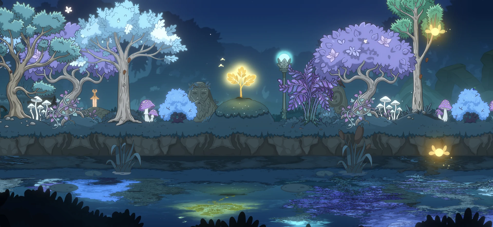

Стаття
Від ферми до безпечного прихистку: як затишні ігри стали мовою емоційного комфорту
Що насправді робить гру затишною — і чому психологія важливіша за естетику.

Cozy games виросли з нішевого інтересу в серйозну ринкову категорію. Сьогодні до неї належать не лише фермерські симулятори й life sims, а й чарівні пазли, спокійні пригоди з дослідженням світу та навіть маленькі моменти тиші всередині значно більших ігор.
Сьогодні «cozy» — це більше, ніж просто настрій. Це пошуковий запит, тег у Steam, естетика TikTok, спільнотна ідентичність і комерційний сигнал для дуже конкретного типу ігрового досвіду.
Але що популярнішим стає цей термін, то легше його неправильно зрозуміти.
Cozy game не визначається самими лише пастельними кольорами, м'якою музикою, милими тваринами, садами чи затишними селищами. Усе це може допомагати створити настрій, але не є основою. Справжнє ядро cozy gaming — психологічне: гравець має почуватися в безпеці, без поспіху та з відчуттям контролю.
Саме тому Animal Crossing: New Horizons і Stardew Valley стали такими важливими. Вони не винайшли комфорт в іграх і не створили розслаблений геймплей з нуля. Але вони довели те, що індустрія роками недооцінювала: комфорт, рутина, творчість і прогрес без тиску можуть бути центром успішного ігрового досвіду.
Cozy gaming пройшов шлях від неусвідомленого відчуття до впізнаваної комерційної категорії. Він еволюціонував із ностальгії та особистих ритуалів у мову дизайну, яка сьогодні виходить далеко за межі фермерських симуляторів.
Щоб зрозуміти, як це сталося, варто дивитися на cozy games не як на просту хронологію релізів, а як на ланцюг проблем і відповідей.
Що таке cozy game?
Cozy game — це гра, побудована навколо комфорту, безпеки та темпу, який контролює сам гравець. Замість того щоб постійно штовхати гравця через тиск, жорсткі стани поразки або конфлікти з високими ставками, такі ігри створюють простір, де прогрес відчувається спокійним, особистим і керованим.
То що таке cozy games на практиці? Це можуть бути фермерські симулятори, life sims, пазли, ігри про декорування, дослідження світу або спокійні моменти всередині значно більших пригод. Їх об'єднує не одна конкретна механіка, а емоційний результат: гравець почувається в безпеці, не поспішає й може рухатися у власному темпі.
Саме тому cozy games краще розуміти як філософію дизайну, а не як суворий жанр. Cozy game — це не просто мила гра. Вона створена так, щоб зменшувати тиск, поважати час гравця й робити маленький прогрес значущим, не перетворюючи його на роботу.
Коріння жанру: коли рутина стала геймплеєм
Ще до того, як «cozy games» стали популярним терміном, ігри десятиліттями експериментували з повсякденним життям. Фермерські симулятори, life sims та ігри про будівництво або облаштування особистого простору довели просту, але сильну ідею: гравцям не завжди потрібен бій, щоб бути залученими.
Саджати врожай, збирати ресурси, говорити з мешканцями, розставляти меблі чи покращувати маленький шматок землі — усе це може бути змістовним геймплеєм. Ці дії можуть здаватися дрібними, але вони створюють ритм. Гравець повертається не тому, що йому потрібен адреналін, а тому, що світ відчувається живим поруч із ним.
Однак ранні версії цієї формули часто несли в собі сильне мислення менеджмент-ігор. Час, ефективність, ресурси й правильне планування могли ставати важливішими за комфорт. Гра могла виглядати мирною на поверхні, але всередині відчуватися як список завдань.
Так виник перший великий конфлікт у cozy-дизайні:
Як зберегти прогресію, не змушуючи гравця відчувати, що він працює?
Гравці вже хотіли безпечних ритуалів, але індустрія ще не до кінця розуміла, що сам комфорт може бути ринковою цінністю.
Stardew Valley: прогрес без тиску
Stardew Valley стала поворотним моментом, бо майже ідеально відповіла на цей конфлікт. Вона не прибрала цілі. Навпаки, у Stardew Valley багато структури: фермерство, шахти, риболовля, крафт, стосунки, сезони, покращення, колекції та довгострокова прогресія. Але ключова різниця в тому, що гравець сам вирішує, що для нього важливо.
Ви можете оптимізувати ферму. Можете ігнорувати шахти. Можете проводити час на риболовлі. Можете зосередитися на стосунках. Можете прикрашати свій простір. Гра майже ніколи не каже вам, що ви граєте неправильно — як тут не згадати The Elder Scrolls?
Це одна з найсильніших основ cozy-дизайну:
Гравцю потрібно достатньо структури, щоб не стало нудно, і достатньо свободи, щоб не виникав тиск.
У Stardew Valley повторення не відчувається як покарання. Воно відчувається як ритуал. Посадити, полити, зібрати, продати, покращити. Кожна маленька дія створює маленьку винагороду. З часом ці маленькі винагороди перетворюють занедбаний клаптик землі на дім.
Саме тому Stardew Valley стала більше, ніж просто успішною інді-грою. Вона стала дизайнерським орієнтиром. Вона довела, що cozy не означає порожньо. Cozy означає ретельно налаштовану прогресію з низьким рівнем психологічного тиску.
Гра також показала, що рутина може бути приємною, коли вона поважає свободу вибору гравця. Одна й та сама дія може відчуватися розслаблено або виснажливо залежно від того, чи гравець сам її обирає.
Цей урок став центральним для всього ринку cozy games.
Animal Crossing: New Horizons і момент, коли cozy стало культурою
Якщо Stardew Valley допомогла визначити механічну формулу cozy gaming, то Animal Crossing: New Horizons перетворила його на культурний феномен.
Гра вийшла в момент, коли реальний світ раптово став небезпечним і непередбачуваним. Люди були ізольовані, рутини зруйновані, а звичайне соціальне життя стало складним. Animal Crossing запропонувала щось дуже конкретне саме тоді, коли це було потрібно: безпечний соціальний простір, який відчувався спокійним, передбачуваним і особистим.
Острів був не просто локацією — він вступав у ролі контрольованого світу. Гравці могли прибирати, прикрашати, саджати квіти, ловити комах, відвідувати друзів, ділитися дизайнами й поступово формувати острів як відображення себе.


У час, коли реальне життя здавалося хаотичним, гра дала м'яку структуру та емоційну стабільність. Саме тут cozy gaming став більшим, ніж тип гри. Він став стилем життя і формою самовираження.
Гравці не тупо залипали в Animal Crossing, а активно показували свої острови, ділилися власною естетикою, будували рутину й перетворювали віртуальні простори на частину особистої ідентичності. Ага, аж настільки.
Гра стала соціальною платформою без агресії, яку часто асоціюють із змагальними онлайн-просторами. Саме тоді індустрія почала сприймати cozy games всерйоз.
Після Animal Crossing: New Horizons стало неможливо відмахуватися від cozy gaming як від маленької ніші для «casual» гравців. Аудиторія була великою, активною й комерційно значущою. Cozy games були не якоюсь там нішею — вони були прибутковою нішею.
Ринок зрозумів просту річ: багато гравців не шукають ще більше стресу. Вони шукають місце, де можна від нього відновитися. І звичайно, коли є платоспроможний покупець — ринок відповідає пропозицією.
Криза: коли cozy стало поверхневою формулою
Комерційний успіх завжди породжує наслідування. Після злету Stardew Valley, Animal Crossing і ширшого cozy-руху ринок почав копіювати видимі елементи cozy games: пастельні кольори, маленькі містечка, ферми, котів, відьом, м'яку музику, милих персонажів і системи декорування.
На поверхні все виглядало правильно. Але гравці швидко помічають, коли щось відчувається «не так».
Cozy гра не може вижити лише на естетиці. Якщо прибрати тиск, небезпеку й конфлікт, але не замінити їх змістовною прогресією, сенсорним задоволенням або самовираженням, результатом буде не комфорт. Результатом буде порожнеча і відчуття невдоволення.
Саме тому багато cozy-клонів провалюються. Вони плутають «низький стрес» із «повною відсутністю дизайнерської напруги». Але ж cozy — це не про відсутність структури. Це контрольована структура. Гравець усе ще має відчувати, що він щось будує, змінює, відкриває або покращує. Різниця в тому, що гра не повинна карати його за рух у власному темпі.
Так виник наступний великий конфлікт:
Як грі залишатися приємною, не стаючи поверхневою?
Криза cozy-клонів чітко показала одну річ: сад не робить гру cozy, якщо його поливання відчувається як неоплачувана праця. Миле селище не створює комфорту, якщо гравця засипають хатніми справами. М'яка кольорова палітра не має значення, якщо інтерфейс створює внутрішню напругу.
Cozy — крихке. Воно ламається, коли гравець починає відчувати, що гра контролює його, а не він контролює власний темп.
Сучасні cozy games: від жанру до дизайнерського шару
Сучасний cozy gaming вижив, бо еволюціонував за межі ферм і островів. Сьогодні cozy не обмежується life sims. Воно може з'являтися в пазлах, іграх про дослідження світу, наративних іграх, менеджмент-іграх і навіть усередині більших, значно інтенсивніших пригод.
Тут стає корисною ідея «cozy pockets» — маленьких затишних кишень усередині ширшого ігрового досвіду. Cozy pocket — це невеликий безпечний простір у межах більшої гри: кімната з каміном, вогнище в таборі, таверна, домашня база, сцена приготування їжі, місце для риболовлі, тиха розмова або будь-який момент, де гравцю дозволяють зупинитися й видихнути.


Такі моменти можуть бути особливо сильними саме тому, що існують у контрасті із зовнішнім світом. Готування біля вогню вночі, догляд за конем, упорядкування кімнати або відпочинок у безпечній зоні можуть відчуватися ще комфортніше, коли за межами цього простору існують небезпека, холод, конфлікт або невизначеність. Гравець відчуває межу між хаосом і безпекою. Цей контраст посилює емоційний ефект.
Саме тому cozy не варто сприймати як фіксований жанр. Це емоційна ціль. Механіки можуть бути різними, але вони мають підтримувати одне й те саме відчуття: гравець у безпеці, гравець контролює темп, дії гравця мають значення, а гра відповідає м'яко, а не агресивно.
Саме тому quality-of-life дизайн такий важливий для cozy ігор. Інвентар, контроль часу, автоматизація, швидкість анімацій, менеджмент ресурсів, зрозумілість інтерфейсу й дизайн покарань — це не дрібниці. Вони напряму формують емоційний досвід.
Поганий інтерфейс може зруйнувати cozy-відчуття так само легко, як гучний звук або несправедливий дедлайн.
Cozy games — це про контроль, а не лише про милоту
Історія cozy games ясно показує одну річ: естетика допомагає, але справжню роботу виконує психологія. Мила візуальна стилістика може привабити гравців. М'яка музика може створити настрій. Чарівне селище може зробити перше враження теплішим. Але цього недостатньо, якщо гра змушує гравця поспішати, карає його або завалює справами.
Справжнє ядро cozy games — контрольована безпека.
Гравці мають відчувати, що світ керований. Вони мають прогресувати без страху жорсткого покарання за кожну помилку. Рутини мають бути знайомими, а не виснажливими. Цілі мають тягнути гравця вперед, не перетворюючись на тиск.
Саме цей баланс відділяє cozy game від просто милої гри.
Що це означає для розробників
Для розробників це змінює те, що потрібно тестувати. Баги, баланс і retention усе ще важливі. Але в cozy іграх потрібно також тестувати відчуття:
- Чи змушує гра гравця поспішати?
- Чи карає вона повільну гру?
- Повторювані дії приємні чи поступово стають рутиною-зайнятістю?
- Чи створює інтерфейс напругу?
- Чи може гравець кастомізувати або отримати простір, який відчувається його власним?
- Чи прогресія відчувається як винагорода, не перетворюючись на обов'язок?
Ці питання важливі, бо — як ця стаття повертається до цього знову і знову — cozy це не самий лише візуальний стиль. Це стосунки довіри між грою та гравцем.
Гравці повертаються не тому, що у світі немає проблем. Вони повертаються тому, що знають, як їх контролювати.
Lumen Grove і cozy-філософія дизайну POINTS.GS


Ця ідея також лежить в основі Lumen Grove — нашої мобільної cozy game від POINTS.GS про відновлення чарівного гаю у світі, який майже втратив своє світло.
У Lumen Grove фокус не на швидкості, тиску чи ідеальній ефективності. Ритм м'якший: саджати, збирати, прикрашати, відкривати нові ділянки й поступово повертати світло до Far Far Forest. Мета — дати гравцям відчуття спокійного прогресу, не перетворюючи гру на ще один список справ.
Для нас Lumen Grove — це практична перевірка головної ідеї цієї статті: cozy games не визначаються самими лише пастельними кольорами чи чарівною візуальною стилістикою. Вони працюють тоді, коли гравці почуваються в безпеці навіть у темному лісі, мають контроль і отримують винагороду за маленький, але значущий прогрес.
Якщо такий досвід вам близький, завантажуйте Lumen Grove і виростіть власний маленький куточок світла у Far Far Forest.
Cozy — це дизайн довіри
Історія cozy games не про те, як ігри стали милішими. Вона про те, як ігри навчилися підтримувати іншу потребу гравців.
Stardew Valley показала, що гравці хочуть цілей без примусу. Animal Crossing: New Horizons показала, що безпечний віртуальний простір може стати соціальним і культурним феноменом. Хвиля поверхневих cozy-клонів показала, що самої естетики недостатньо. А сучасний cozy-дизайн показує, що комфорт може існувати далеко за межами фермерських симуляторів.
Cozy — це не суворий жанр. Можливо, це взагалі не жанр.
Це спосіб дизайну ігрового досвіду навколо безпеки, ритму, контролю й відновлення.
Майбутнє cozy games належатиме не проєктам, які просто виглядають мило.
Воно належатиме іграм, які вміють заслужити довіру гравця: прогресом без тиску, системами, які не карають за паузу, і світами, куди хочеться повертатися не через страх щось втратити, а тому що там спокійно бути.